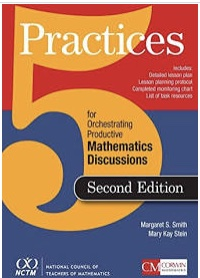
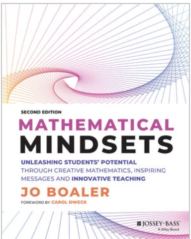

Website creators: Halley Bowman & Jennifer Kueter
Images used from Creative Commons
Copyright © October 2022
Webmaster Email: jkueter@email.sc.edu

Would you like more information on Conceptual Mathematics? Here are some additional resources and references we use in the creation of our podcasts and the teaching of our students.
|  | 5 Practices for Orchestrating Productive Mathematics Discussions |
Margaret Smith & Mary Stein |
|  | Mathematical Mindsets: Unleashing Students' Potential through Creative Mathematics, Inspiring Messages and Innovative Teaching | Jo Boaler |
References used in our podcast and vodcast can be found here
Website creators: Halley Bowman & Jennifer Kueter
Images used from Creative Commons
Copyright © October 2022
Webmaster Email: jkueter@email.sc.edu